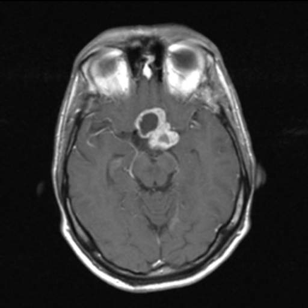

Ficha del catálogo
Craneofaringioma
- Sistema
- Nervioso
- Modalidad
- RM
- Región
- Región supraselar e intraselar
- Dificultad
- Intermedio
El craneofaringioma es un tumor benigno derivado de restos epiteliales de la bolsa de Rathke que asienta en la región supraselar. Presenta una distribución por edades con un pico en la infancia y otro en el adulto mayor, y se manifiesta por alteración visual, déficit hormonal, retraso del crecimiento en niños e hidrocefalia.
Técnica
Resonancia magnética selar y supraselar con cortes finos sagitales y coronales en T1 y T2 antes y después del contraste. La tomografía complementa el estudio porque demuestra con claridad las calcificaciones.
Qué observar
- Masa supraselar con componente quístico dominante y nódulo sólido
- Calcificaciones periféricas o nodulares, más evidentes en tomografía
- Señal alta en T1 dentro del quiste por contenido proteico o hemorrágico
- Realce de la pared del quiste y de la porción sólida
- Compresión del quiasma óptico y del tercer ventrículo
- Hidrocefalia por obstrucción de los agujeros de comunicación interventricular
Hallazgos
Lesión de la cisterna supraselar, con frecuencia lobulada, formada por uno o varios quistes de señal variable y por un componente sólido que realza. El contenido quístico suele ser hiperintenso en T1 por su alto contenido proteico y en T2 mantiene señal alta. Las calcificaciones son un rasgo distintivo, sobre todo en la forma infantil. El crecimiento hacia arriba comprime el quiasma y puede obstruir la circulación del líquido cefalorraquídeo.
Perlas
La combinación de quiste con señal alta espontánea en T1, componente sólido que realza y calcificación es muy sugestiva y prácticamente no se da en el adenoma. Ante una masa supraselar en un niño conviene revisar el estudio en busca de calcio con tomografía, porque su presencia reorienta el diagnóstico de forma decisiva.
Diagnóstico diferencial
- Macroadenoma hipofisario con extensión supraselar
- Se origina dentro de la silla, que aparece ensanchada, y rara vez calcifica o muestra quistes de contenido proteico.
- Quiste de la bolsa de Rathke
- Lesión de pared fina sin componente sólido que realce, con un nódulo intraquístico no realzante y sin calcificación relevante.
- Glioma de la vía óptica o del hipotálamo
- Sigue y expande el trayecto de los nervios y el quiasma, sin calcificación ni quistes de contenido proteico.
- Germinoma supraselar
- Masa sólida infiltrante con engrosamiento del tallo, diabetes insípida precoz y posible diseminación por el líquido cefalorraquídeo.
Simuladores
- Aneurisma trombosado de la arteria comunicante anterior
- Quiste aracnoideo supraselar
- Dilatación del receso infundibular del tercer ventrículo
Por modalidad
- TC
- Demuestra las calcificaciones con gran fiabilidad y define la anatomía ósea de la base para la planificación quirúrgica.
- RM
- Caracteriza el contenido de los quistes y precisa la relación con quiasma, hipotálamo y tercer ventrículo.
Protocolo
Cortes finos sagitales y coronales T1 y T2 centrados en la región selar, series tras contraste y estudio de todo el encéfalo para valorar hidrocefalia; se añade tomografía dirigida cuando se busca confirmar calcificación.
Clasificación
Se reconocen dos formas principales. La adamantinomatosa predomina en la infancia y es la más quística y calcificada, mientras que la papilar aparece sobre todo en el adulto, tiende a ser más sólida y calcifica con menos frecuencia.
Errores frecuentes
- Atribuir a un adenoma toda masa selar sin valorar la calcificación
- No informar la relación con el hipotálamo, determinante del riesgo quirúrgico
- Pasar por alto la hidrocefalia asociada por limitar el estudio a la región selar

craneofaringioma región supraselar quiste con calcificación quiasma óptico hidrocefalia tumor pediátrico